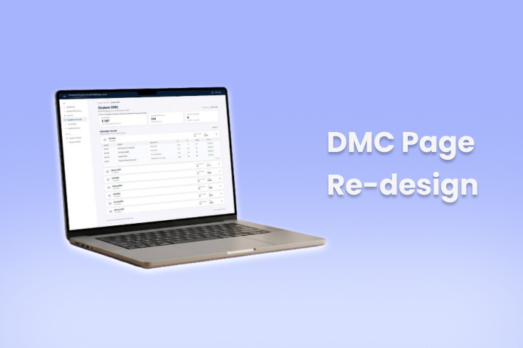
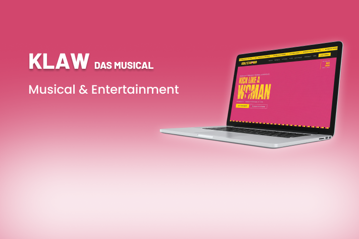
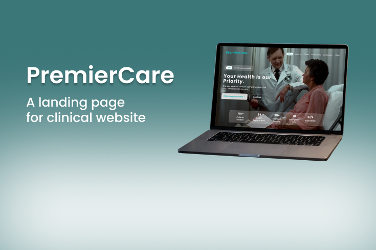
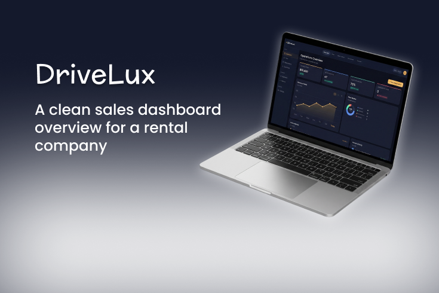
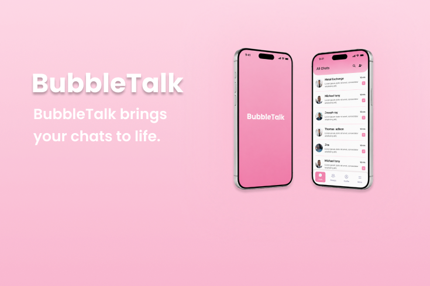
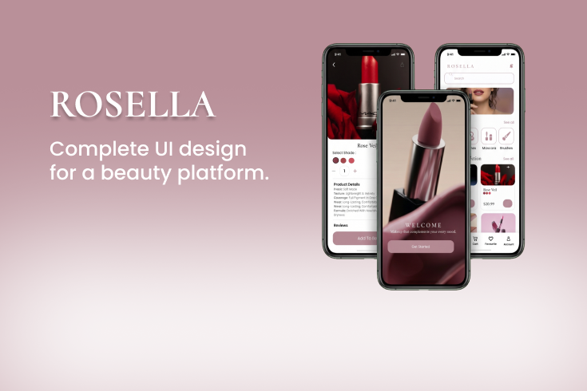

I run an analytical user experience design track backed by rigorous computer science principles to build accessible, high-performance product architectures.
I am a UI/UX designer with a solid Computer Science framework from the University of Engineering and Technology, specializing in digital software environments that map user objectives directly onto programmatic patterns.
By bridging software engineering processes, data structures, and human-computer interactions, I eliminate complex accessibility bottlenecks. I build clean, high-performance systems that turn messy transactional pipelines into scannable interfaces.
Architected an authoritative, multi-page corporate web ecosystem structured around UAE Corporate Tax compliance, sector practice matrices, and diagnostic lead workflows.

Restructured a continuous, mixed-semester grades table into a modular, semester-centric architecture with progressive disclosure to streamline academic scanning.

Designed a cinematic, emotionally immersive multi-page website for a German musical World Premiere in Köln 2026.
Designed a transparent, real-time bidding experience that simplifies complex blockchain interactions into a familiar auction flow.

Designed a professional healthcare platform focused on trust, clarity, and easy access to medical information.

Designed a clean Dashboard UI for a rental car company utilizing structured visual hierarchies.

Assembled crisp interface specifications and responsive chat structures to balance component alignment metrics.

Designed a highly structural presentation matrix optimized for responsive product catalog mobile browsing parameters.
Developed a multi-tenant digital menu SaaS platform using Next.js 15 (App Router) and Supabase integration mechanics.
Developed a responsive e-commerce web application focused on scalable frontend architecture and user-centered modular components.
Developed a SPARK transaction simulator using React.js, Firebase, and Node.js with OTP verification algorithms.
Developed a deep learning model using ResNet50 and TensorFlow to classify diabetic retinopathy stages from retina scan images.
Built a Python-based proxy server with URL blocking, caching, and real-time dashboard visualizations via PyQt5.
Available for cross-functional layout optimizations, digital strategy engineering, or end-to-end user experience audit procedures.